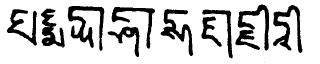

by Jamyang Khyentse Chökyi Lodrö
དཀོན་མཆོག་རྩ་གསུམ་རྒྱ་མཚོའི་བདེན་སྟོབས་དང་། །
könchok tsa sum gyatsö den tob dang
Through the power of the truth of the Three Jewels and the oceanic Three Roots,
ཁྱད་པར་རིག་འཛིན་རྡོ་རྗེ་དྲག་རྩལ་གྱིས། །
khyepar rigdzin dorjé drakstal gyi
Especially the vidyādhara Dorje Drakpo Tsal,
མཐུ་སྟོབས་ནུས་པ་བསྐལ་པའི་མེ་བཞིན་སྦོར། །
tutob nüpa kalpé mé zhin bor
May all their power, force and strength blaze forth like apocalyptic flames
མཐའ་དམག་དམར་པོའི་དཔུང་ཚོགས་ལྷག་མེད་བསྲེགས། །
tamak marpö pungtsok lhakmé sek
To burn away the invading forces of the Red Army until none remains.
ཀླ་ཀློའི་འདུན་གྲོས་བྱེ་མ་ཆུ་བླུགས་བཞིན། །
lalö dün drö jema chu luk zhin
May the machinations of these barbarians vanish like water poured on sand,
ནུས་མེད་རང་ཞི་གྱུར་ནས་རྒྱལ་བའི་བསྟན། །
nümé rang zhi gyur né gyalwé ten
And may they be naturally subdued, rendered powerless, so that the teachings of the victorious Buddha,
དེ་འཛིན་སྡེ་དང་བཅས་པ་གནོད་འཚེ་བྲལ། །
dé dzin dé dang chepa nö tsedral
Together with all the ranks of those who uphold them, remain intact and unscathed.
བསམ་དོན་ཡིད་བཞིན་འགྲུབ་པར་བྱིན་གྱིས་རློབས། །
samdön yizhin drubpar jingyi lob
Grant your blessings so that this aspiration may be fulfilled according to our wishes.
ཅེས་པའང་ཆུ་འབྲུག་ཆོ་འཕྲུལ་ཟླ་༡ཚེས་ལ།  སྤེལ་བ་དགེ། །།
Composed on the fist day of the Month of Miracles, Water Dragon year. May virtue abound.
Source:
'Jam dbyangs chos kyi blo gros. "dkon mchog rtsa gsum rgya mtsho'i bden stobs brjod pa/" in ’Jam dbyangs chos kyi blo gros kyi gsung ’bum. 12 vols. Bir: Khyentse Labrang, 2012. W1KG12986 Vol. 12: 341